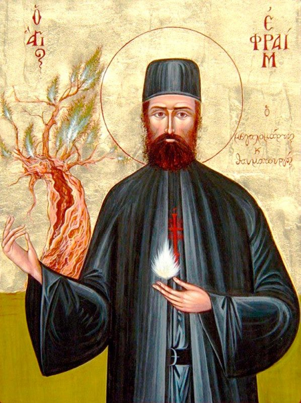

🌅
Rugăciunile dimineții
Rânduiala rugăciunilor de dimineață, de pe Doxologia.
Deschide pe Doxologia
Rânduiala rugăciunilor de dimineață, de pe Doxologia.
Deschide pe DoxologiaRânduiala rugăciunilor de seară, de pe Doxologia.
Deschide pe Doxologia